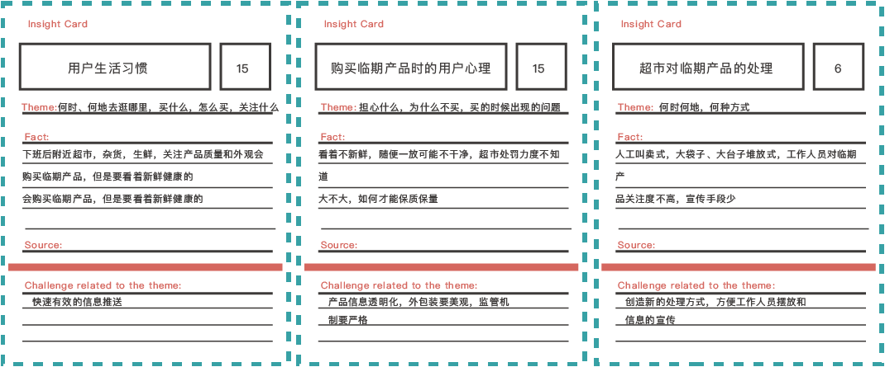
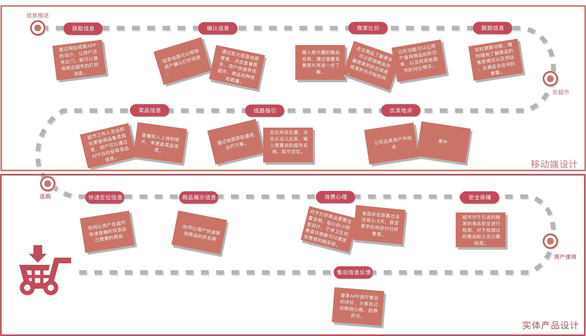
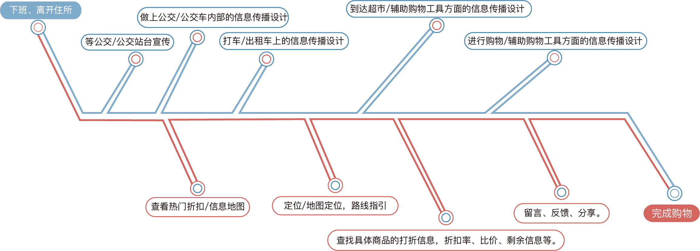
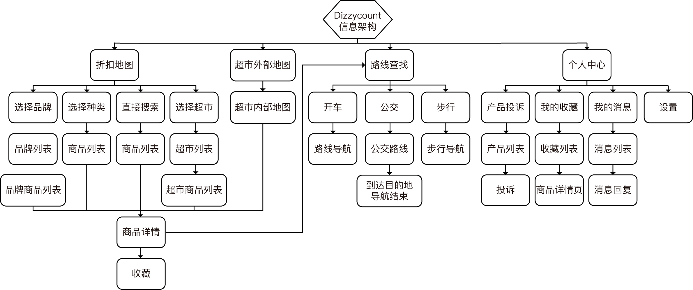
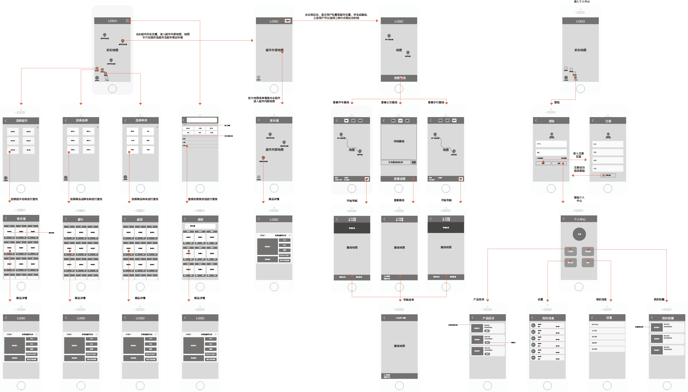

Preliminary Research
Desktop research
Before the field research, we conduct desktop research, collect relevant information through the Internet and other means, sort out the technical feasibility, business model, target location, target audience and other issues, and clarify the issues and assumptions to be confirmed during the field research.

Field research
Discount methods research
Summary of user and employee interviews
During the research process, we talked to the end target users, and through prepared interview scripts, we conducted interviews with supermarket customers and supermarket users to understand their expectations, ideas and needs.

User requirements analysis
Affinity chart
The affinity diagram is used to disperse and summarize all the issues and needs that may be linked from the perspective of the user and the supermarket.

Summary of user requirements and problems
Summarize user problems and summarize user requirements.

Insights card
Insight cards are used to deeply analyze the challenges and difficulties encountered by users behind each requirement.
Persona
With all the preliminary research findings, we created two personas to help us use empathy to understand users, help with subsequent design work, team discussions, and ensure consistent team messaging.

Empathy
After sorting out the user role, use empathy and put yourself in the user's shoes to think about how the user would see, do, think and feel about such a platform.

Service System Design
User journey map
Since we are designing a whole service system, we need to use system design thinking to consider the whole user journey from the beginning to the end of the service, and think about what problems the user will encounter at each step and how we need to help the user have the best experience.
Service System Diagram
The entire service system involves many people, things, objects, and fields and their interactions, so it is important to map the system to sort out the relationships.

Touch points
The design of each node where users will interact with the service system, including online and offline, interface and non-interface design.
Interactive and Visual Design
Information architecture
Building the information architecture of the whole APP is the first step to start the design, following the design specifications of the APP, conforming to the user's usage habits and ensuring the overall architecture is flat, simple, easy to understand and without learning costs.
Interactive design
Based on the information architecture, we go into the details of interaction design for each page, including what information needs to be shown, information priority, interaction mode, interaction flow, etc.
Visual design
According to the desired product tone, we choose the main brand color and secondary color, and design a visual style that meets the aesthetic needs of the target users.